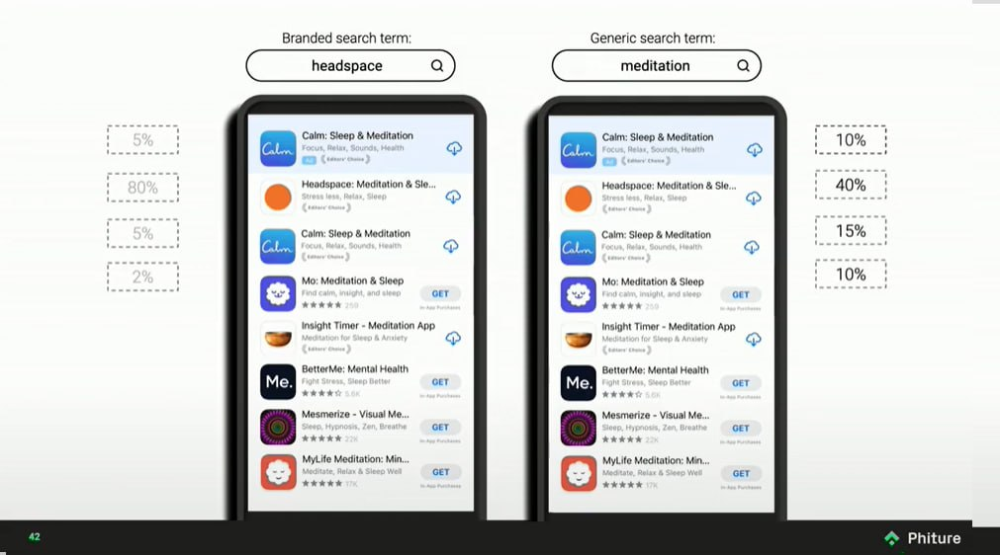

На всякий случай, это именно постмортем бизнеса, само приложение доступно в апсторе (совершенно бесплатно), и я планирую, по мере возможности, его обновлять.
Итак, приложение, как мне кажется, получилось неплохое. Не идеальное, есть еще куда его пилить и улучшать, но здорово уже то, что не имея никакого опыта ни в iOS, ни в Swift, ни в SwiftUI (ChatGPT не юзал, ахах), я его довел до релиза.
Однако, бизнеса из этого не вышло. Попробую коротко проговорить почему.
Я наивно предполагал, что "сделаю классную тулзу" и этого будет достаточно для успешной конкуренции с теми продуктами, что уже есть на рынке. Реальность же оказалась такова, что классного продукта недостаточно, более того, есть примеры, когда продукт может быть посредственный, но, тем не менее, его продают и продают хорошо. То есть, в первую очередь, нужно понять как ты продукт будешь продавать.
Почему? Потому что чтобы с кем-то конкурировать, нужно сперва оказаться в равных условиях, а условия изначально не равны — ты появляешься в сторе на позиции в самом конце списка, и тебя просто не найдут, а значит — не скачают, а значит — не купят. При этом, в основном зарабатывают приложения из первой тройки (см. картинку), а те, что ниже, делят между собой остатки, так что находясь на 60-м месте, понятно сколько пользователей ты получишь и сколько на них заработаешь.

В общем, у Агендуса было катастрофически мало пользователей, настолько мало, что даже выводов никаких я не смог сделать. Нельзя сделать никаких выводов на 40 пользователях.
А как увеличить это число? Надо как-то продвигаться, правильно? То есть, это SEO (в случае с апстором — ASO) и реклама. Но и тут есть проблемы. Сегмент Агендуса — таск-менеджеры — очень неспецифичный. Это значит, что нельзя каким-то образом просто понять кому показать рекламу, чтобы от нее оказался максимальный эффект, а это, в свою очередь, значит, что рекламу надо показывать всем, эффектривность у нее будет крайне маленькая, а стоить она будет дорого. Почти такая же история с SEO/ASO — на рынке куча такого софта, и все хотят раскрутиться, чтобы куда-то пролезть нужно как-то выделять ту аудиторию, до которой ты хочешь достучаться, а значит — становиться более специфичным, делать что-то, что не делают другие, причем не в том смысле, что придумать новый удобный UI, а в том, что делать фичи под конаретных людей (например, под людей с ADHD — синдромом дифицита внимания), что в случае с Агендусом превращало его в какое-то совсем другое приложение (в целом, это ок — изменение фокуса/пивот и функциональности после запуска в порядке вещей), но приложение это надо было бы перепридумывать с нуля, а к этому я оказался не готов.
В итоге, я смог сделать продукт инженерно, но не смог сделать его бизнесово, потому что, с точки зрения бизнеса продукт — это не только инженерное решение, но и ценность для пользователей, и получается, что я или не смог до пользователей эту ценность донести, или же она была не настолько привлекательной, чтобы предпочесть мое решение существующим. Лично мне хочется думать, что ценность все же была, однако достаточно специфичная, ахах. И, несмотря на то, что одной стороны это грустно, с другой — было крайне интересно и познавательно всем этим заниматься. То есть, кажется, что это все больше про знания, которые я приобрел в процессе, чем про результат. Есть ощущение, что именно наличие этих знаний повышает вероятность успеха в дальнейшем, так что делайте, что — не так важно, главное — делайте.
Если вдруг собираетесь что-то мутить в одно лицо, то есть очень хорошая, хотя и не очень свежая (но тем не менее, все еще очень релевантная) книжка — Start small, stay small, которую крайне рекомендую.
Теперь еще совсем галопом из того, с чем столкнулся:
- Если с чем-то интегрироваться, то по-минимуму. В моем случае я сознательно очень тесно интегрировался в iOS, и последствия этого решения начал ощущать почти сразу, например, когда обнаружил, что в Напоминаниях есть новая функциональность, для которой эпл не стал/захотел добавлять АПИ. Понятно, что такая глубокая интеграция — совершенно сознательное решение, которое сэкономило мне кучу времени и сил, и если бы с Агендусом все было бы хорошо, я мог бы сделать свой календарь/напоминания, отцепившись от iOS, но, тем не менее, пока я сидел на их АПИ, я потенциально терял тех пользователей, которым недоступная мне функциональность была важна.
- В добавок к предыдущему. Нужно реально воспринимать риски того, что если ты не делаешь что-то уникальное, то это могут повторить. И это может повторить сама платформа, и тогда твои конкурентные преимущества могут сильно просесть — в моем случае, на последнем WWDC эпл анонсировала показ напоминаний прямо в календаре, что было для меня не то, чтобы чем-то совершенно неожиданным, но все же неприятной новостью (к тому моменту я уже почти готов был сворачивать бизнес, и этот анонс только ускорил это решение).
- В ап сторе есть куча нюансов, причем совершенно неочевидных, которые знают только те, кто занимается продвижением там (ASO). Например, если вы выкладываете свое приложение, то при релизе эпл будет какое-то время вас "продвигать" (показывать вас выше в выдаче и тп), и этим надо попробовать воспользоваться по-максимуму, потому что любая такая "помощь" — это потенциально ваш шанс. Однако, это так же значит, что не нужно выкладывать приложение сразу на весь мир — потому что если оно не оптимизировано под конкретные рынки (например, не локализовано), то вы просто потеряете это продвижение и все (продвигаться оно будет, но пользователи на это продвижение не будут реагировать). Как это все узнать заранее — непонятно, но иногда знать это супер полезно.
- ASO (app store optimization) — из того же ряда, что и SEO, только с еще меньшей возможностью на что-то повлиять, а самое главное — получить обратную связь быстро. То есть, там такая же схема — что-то поменяли, ждем две недели, смотрим как отразилось, повторяем. И если с SEO есть, по ощущениям, чуть больше возможности для маневра, то в ASO большинство маневров из не совсем легального поля, а значит есть риск получить бан. Тулзы для ASO — это такие очень специфичные штуки, которые просто ходят и фетчат выдачу из стора, и хотят за это дофига денег, потому что рассчитвают на компании с большими маркетингшовыми бюджетами. Кажется, можно наклепать на коленке скрипт, который пофетчит все это бесплатно и как-то сэкономить, но, опять же, это время и силы.
- Хорошо бы получить каких-то настоящих пользователей, чтобы они хоть как-то реагировали на продукт. Отсутствие реакции — намек на то, что что-то не так (а не на то, что вы сделали супер тул, ахаха). Мне очень не хватало фидбэка, думаю, что если бы он был, то даже небольшое количество пользователей воспринималось бы мной совсем иначе.
- Не стоит делать приложение платным сразу, особенно если вы пытаетесь выйти в очень активный сегмент. Стоит сделать что-то очень простое быстро, и набрать первых пользователей, после чего добавлять функциональность, реагируя на фидбэк, и искать свой Product-Market-Fit. В целом, я думаю, что мог зарелизиться раза в два быстрее, и как результат быстрее понять продолжать ли и тп. Однако, если вы делаете что-то специфичное, то бесплатные пользователи вам могут не принести никакой пользы, особенно если они вам нужны для виральности — нужно смотреть в каждом конкретном случае, есть ли вообще виральность в этом сегменте и будет ли она работать.
- Делать скриншоты — гимор. Делать скринкасты — гимор. И все это нужно делать на разных языках, и под разные девайсы/разрешения. Хорошо бы заранее подумать, как сэкономить время на эти действия (если их делаете вы, а не кто-то, кому вы это делегируете).
Как-то так.
p.s. Если вы обладатель российского паспорта, то нужно учитывать, что только организационная часть может занять существенное время, поэтому стоит начинать ее как можно раньше. К примеру, у эппла много чего, относящегося к бизнесу, делается в ручном режиме. Готовьтесь к тому, что даже просто оплата дев аккаунта может потребовать неделю на процессинг, а-то и созвона с командой поддержки. Ну и я не говорю уже про открытие счета в банке. В общей сложности, я потратил на всю эту возню пару месяцев.